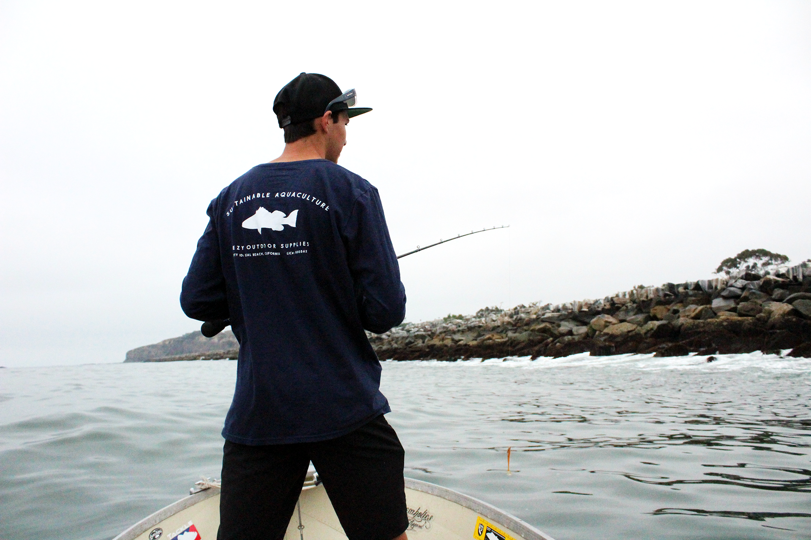

About Kyle
Kyle is currently a junior at the University of Montana studying Media Arts. When not working on course work Kyle enjoys drawing wildlife and building his own clothing brand, Rambler Co. which will
be debuting soon. Altough still a student, Kyle has had the priviledge of collaborating with respected companies such as Lateral Vision Co. , Montana Wild, Wild Roots, and has overseen
the personal branding and logo development of many private businesses. Besides school, Kyle is developing his own company and expanding his skills and knowledge to best prepare
himself for a career in graphic design and clothing, whether it is his own company or one he works under.